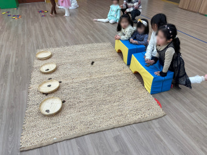
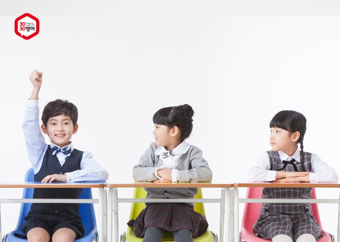

0
수업 만족도(%)
유아 · 초등 1:1 방문 · 비대면 전문 과외
놀이형 집중 수업부터 초등 기초학습 코칭까지,
담임 튜터가 아이 성향에 맞춰 주간 계획과 피드백을 제공합니다.
에듀코 등 다양한 교육 서비스를 알아보는 가정에도 아이에게 맞는 학습 방향을 안내합니다.
우리 동네 맞춤 안내
전국 시군구별 유아·초등 학습지 과외 정보와 상담 안내를 한곳에서 확인할 수 있습니다.
0
수업 만족도(%)
0
누적 상담 건수
0
튜터 평균 평점
0
평균 집중 유지(주)
맞춤 프로그램
만 4~7세
초1~초3
초3~초6
학습 고민별 안내
한글 · 수학 · 예비초등
놀이에서 출발해 읽기, 수 감각과 책상 학습의 기초를 준비하는 연령별 수업을 확인하세요. 유아 과외 안내 보기연산 · 문장제 · 오답 관리
학년과 단원별 빈틈을 진단하고 풀이 과정을 설명하는 힘을 기르는 수업을 확인하세요. 초등 수학 과외 안내 보기숙제 · 주간 계획 · 자기주도학습
숙제 미루기와 집중 시간 고민을 주간 계획, 실천 점검과 학부모 피드백으로 관리합니다. 공부습관 코칭 안내 보기진행 방식
아이의 현재 학습 수준과 성향을 확인합니다.
연령, 목표, 성향을 반영해 튜터를 배정합니다.
실시간 화상수업과 복습 콘텐츠로 학습 루틴을 만듭니다.
매주 성장 포인트와 가정 학습 가이드를 전달합니다.
학부모 후기

"낯선 활동에는 쉽게 참여하지 못하던 아이가 선생님의 차분한 안내 덕분에 먼저 손을 들고 도전하기 시작했어요. 놀이가 끝난 뒤에는 무엇을 배웠는지 자기 말로 설명해 주는 모습이 정말 대견합니다."
6세 학부모 최OO
"책상 앞에 오래 앉아 있는 것을 힘들어했는데, 몸으로 경험하는 활동과 학습을 연결해 주시니 집중 시간이 눈에 띄게 길어졌어요. 수업 후에도 배운 숫자와 표현을 놀이에 활용하며 즐겁게 복습합니다."
7세 학부모 정OO"문제를 틀리면 자신 없어 하던 아이가 이제는 풀이 과정을 먼저 설명하고 모르는 부분도 편하게 질문해요. 매주 학습 계획을 함께 점검하면서 숙제를 미루는 습관도 줄고 학교생활에 자신감이 생겼습니다."
초등 4학년 학부모 한OO자주 묻는 질문
만 4세부터 아이의 한글·수학 경험과 집중 시간을 확인한 뒤 놀이형 학습으로 상담할 수 있습니다.
초등 국어·수학·영어 중 필요한 과목을 선택하고 숙제 관리, 오답 정리와 주간 계획을 함께 코칭합니다.
네. 거주 지역과 일정, 아이의 학습 환경을 확인해 방문, 실시간 화상 또는 혼합형 수업을 상담합니다.
무료 상담 신청
연락처를 남겨주시면 전담 매니저가 상담 일정을 안내드립니다.